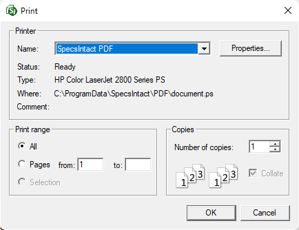

This command can also be executed from the SI Editor's Toolbar or by using the keyboard shortcut Ctrl+P.
The Print Draft command prints a draft copy of an unprocessed SectionA set of files within the Division of a Master or Job that covers specific aspects of construction.
 To produce processed Sections they must be printed through the SpecsIntact Explorer's File menu or the Right-click menu's Process and Print/Publish function.
To produce processed Sections they must be printed through the SpecsIntact Explorer's File menu or the Right-click menu's Process and Print/Publish function.
 The printed draft output of a Section will accurately reflect its on-screen view in the SI Editor. This includes any visible RevisionsThe Revisions command reveals or conceals Revisions that are tagged in the text. Text to be added is identified with underscoring and the addition tags, <ADD> and </ADD>. Whereas text to be deleted, or Redlined, is identified with overstriking and the delete tags, <DEL> and </DEL>, TagsSpecsIntact relies on tags to control content, and formatting, automate processes, and generate reports. These special markers, like <SEC> and </SEC>, define elements and attributes within the specifications. Some tags, like <Page />, function independently. In essence, tags are the building blocks of SpecsIntact documents, and the Specifier NotesSpecifier Notes <NTE> are paragraphs of information included in the Section written to aid the Engineer, Architect, or Specifier in editing the specification.
The printed draft output of a Section will accurately reflect its on-screen view in the SI Editor. This includes any visible RevisionsThe Revisions command reveals or conceals Revisions that are tagged in the text. Text to be added is identified with underscoring and the addition tags, <ADD> and </ADD>. Whereas text to be deleted, or Redlined, is identified with overstriking and the delete tags, <DEL> and </DEL>, TagsSpecsIntact relies on tags to control content, and formatting, automate processes, and generate reports. These special markers, like <SEC> and </SEC>, define elements and attributes within the specifications. Some tags, like <Page />, function independently. In essence, tags are the building blocks of SpecsIntact documents, and the Specifier NotesSpecifier Notes <NTE> are paragraphs of information included in the Section written to aid the Engineer, Architect, or Specifier in editing the specification.
Print Draft Settings

Printer
- Name: A drop-down box that provides a list of available printers and displays the printer details.
- Properties: Customize the print settings in the Microsoft Print window.
Print Range
- All: Provides the flexibility to use the default setting to print All pages within the selected sections.
- Pages: Use this option to specify a custom range of pages.
Copies
Provides the option to specify the desired quantity of printed copies.
Standard Windows Commands
 The OK button will execute and save the selections made.
The OK button will execute and save the selections made.
 The Cancel button will close the window without recording any selections or changes entered.
The Cancel button will close the window without recording any selections or changes entered.
How To Use This Feature
 To Use Print Draft:
To Use Print Draft:
- In the SI Editor, select the File menu, then select Print Draft
- In the Print Draft window, select the desired printer and options
- Click OK
Users are encouraged to visit the SpecsIntact Website's Support & Help Center for access to all of our User Tools, including Web-Based Help (containing Troubleshooting, Frequently Asked Questions (FAQs), Technical Notes, and Known Problems), eLearning Modules (video tutorials), and printable Guides.